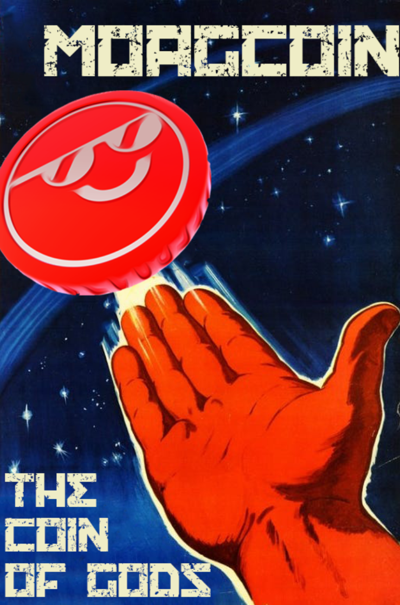

MoagCoin was a functional proof of work cryptocurrency I wrote in Python. It was created as a joke with a friend as a parody of scam cryptocurrencies like BitConnect, advertising fake features like negative transaction latency and an advanced AI that meant it was impossible to lose money. Promotional material was made for it too, by photoshopping Soviet space program posters.
Both the mining utility and the server is written in Python 3. The UI is with Tkinter and the server uses Flask. Mining is done when the server issues the client a block to mine. The miner tries to find a hash with a set amount of zeros at the start, once found it will tell the server the string (which uses a hash of the previous block) that creates that hash. The server verifies and issues a mining reward to the client. Because this was run on a small scale, to prevent abuse, mining rewards are lower depending on how quickly it's done. This was to give users with lower power PCs a chance and to try and prevent users from using online servers like Google Cloud to mine far faster than anyone else.
The mining utility originally played a random song from a provided selection. This included Here comes The Money, keygen music, a MIDI version of a Skrillex song and various others. It mined on the CPU and was able to use multiple cores, giving the user the option to set how many would be used with a slider that had the max value at however many cores the user had. The miner utility had a wallet where the user could see their address and send transactions to others, as well as view their own inbound/outbound transactions. This included the address it was from and the status (ie if it had been confirmed or not). The utility's design had a "hacker" aesthetic, with green text and a black background.